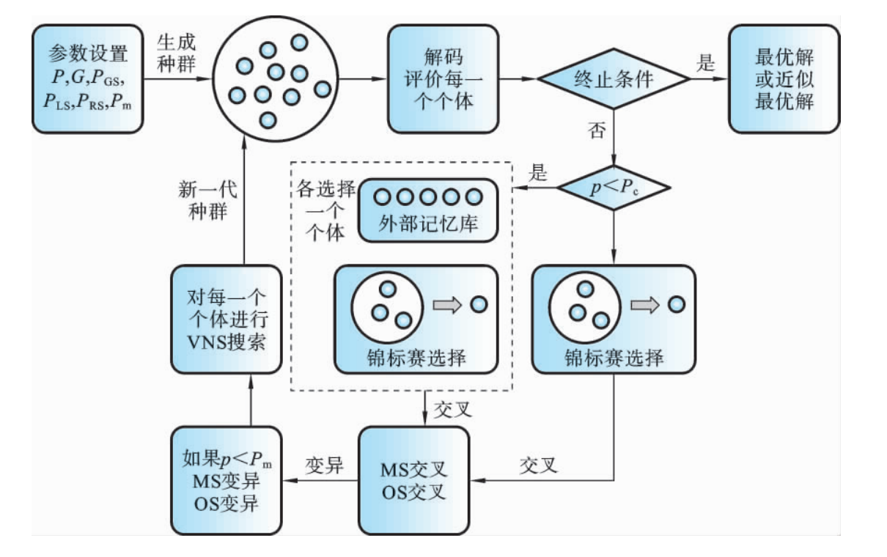
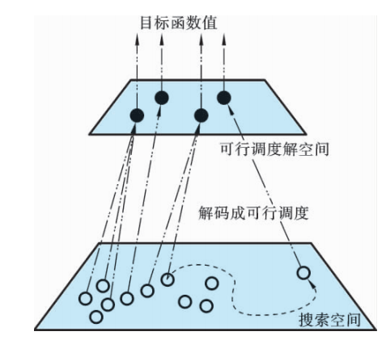
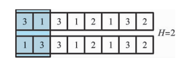

变邻域遗传算法求解柔性作业车间调度问题#
Reference
《柔性作业车间调度智能算法及其应用》高亮 张国辉 王晓娟 著
混合优化算法优化策略
算法特性与混合逻辑
遗传算法（GA）：具备全局优化、隐含并行特性，擅长全局搜索，但局部搜索能力不足.
变邻域搜索（VNS）：针对复杂组合优化问题，通过系统化变换邻域结构避免局部最优，依赖初始解与邻域质量.
混合目的：GA局部搜索弱，VNS依赖初始解，二者结合设计混合算法GAVNS，互补增强全局与局部搜索能力，平衡搜索的广泛性与集中性.
混合结构与策略
嵌入混合结构：将VNS嵌入GA，GA提供高质量初始解并引导搜索方向，VNS对优质解邻域集中搜索.
外部记忆库保优：评价种群个体时，保存一定比例优良个体至外部记忆库.
交叉阶段按概率执行两种方式：搜索初期，为加速收敛，采用记忆库与种群个体交叉；迭代后期，为避免早熟，采用种群内个体交叉.
变异后对个体进行VNS搜索，以优解替换劣解，生成新种群.

初始化
记忆库保优策略
- 传统遗传算法局限与记忆库引入传统遗传算法中进行交叉操作的个体都是从种群中选取的，这只是个体从种群
中获取更新信息的一种方式.
在这种信息交换机制中，个体过于“贪婪”地获取更新 信息，算法容易早熟.
为保护进化中的优良个体，利用记忆库保留搜索过程中的优质解，改善信息共享机制的局限性.
海明距离概念
柔性作业车间调度问题中，搜索空间到可行解目标函数值的映射是多对一关系（如不同调度方案对应相同最大完工时间）.

引入海明距离（简称 $ H $ 距离），指两个编码中不同位数的个数.
例如，两编码海明距离为 $ 2 $，即 $ H=2
$，用于区分目标函数值相同但调度方案不同的个体.

- 记忆库更新规则新优良个体插入记忆库时：
先比较目标函数值，若优于记忆库个体则替换；
若目标函数值相同，进一步比较机器选择部分的海明距离：
海明距离为零，不替换；
海明距离非零，替换记忆库中最差个体.
通过此过程，确保记忆库保留目标函数值优且调度方案具多样性的个体.
遗传操作
选择操作、交叉操作、变异操作参考遗传算法求解柔性作业车间调度问题
变邻域搜索
邻域结构
移动一道工序邻域结构